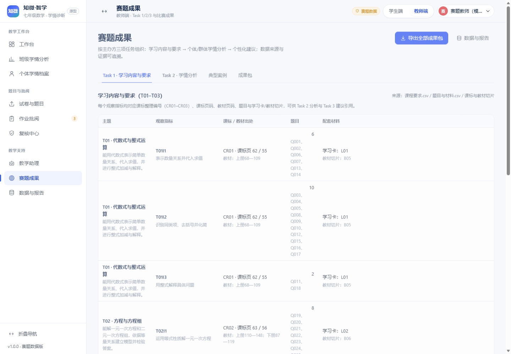

赛题要求智能体把“课程要求—学习材料—学生表现—学习建议”连接起来。我们的核心判断是：先保证数据与证据可靠，再谈分析表达与建议质量。因此系统遵循四条原则：
recordId（作答记录）、Q/L/B（题目/学习卡/教材切片）与观察指标。| 数据 | 规模 |
|---|---|
| 模拟学生 | 40 名（DC01 21 / DC02 19） |
| 作答记录 | 806 行（已评分 795 / 待评分 6 / 未作答 5） |
| 题目 | 54 道（填空 33 / 解答 18 / 选择 3） |
| 材料 | 65 行（54 题 + 3 学习卡 + 8 教材切片） |
| 课程要求 | 9 条（3 主题 × 3 观察指标） |
| 测验节点 | 2 个（N01 / N02） |
| 质量处理 | 结果 |
|---|---|
| 同一事件多版本 | 7 个事件（v1/v2）；取最新版参与分析 |
| 分析记录 | 806 → 799（7 个 v1 作为历史保留） |
| 未作答 / 待评分 | 5 / 6（原始），不判错、不进入分母 |
| 分数异常 | 2 条越界 + 3 条评分点合计不一致 |
| 节点越界 | 1 条（Q038 出现在 N01） |
| 异常排除 | 4 条（保留原值、标记、待人工确认） |
处理规则：同一 作答事件编号按 修订版本 取最大值（如版本冲突按提交时间与异常策略处理）；未作答映射为缺失、待评分映射为待定，二者不计入错误率/掌握率；分数越界、评分点合计不一致、题目不在节点可用列表的记录进入质量报告并排除正式统计；所有原始记录保留在源 CSV 与质量报告中。
DR0133（Q015 总分 3 / 评分点合计 2）、DR0361（Q044 满分 1 / 得分 10）、DR0535（Q034 满分 3 / 得分 4）、DR0515（Q038 不属于 N01 节点）。另有 D17 无 N02 记录（4 条 N01 记录），按“记录不足”处理，不解释为未掌握。系统将官方《课程要求》转为 3 个学习主题与 9 个观察指标，并为每个指标维护：主题目标、课标整理编号（CR01–CR03）、课标文件页/正文页、教材正文页、对应题目 Q、学习卡 L、教材切片 B。这样 Task 1 的“内容—要求—出处”能在 Task 2 分析与 Task 3 建议中被直接引用，而不是单独一份文档。
| 主题 | 观察指标（示例） | 课标/教材出处 | 题目 | 材料 |
|---|---|---|---|---|
| T01 代数式与整式运算 | T01I1 表示数量关系并代入求值；T01I2 识别同类项、去括号并化简；T01I3 用整式解释具体问题 | CR01；课标 62/55；教材上册 68—109 | Q001–Q018（18 题） | L01；B05 |
| T02 方程与方程组 | T02I1 运用等式性质解一元一次方程；T02I2 用消元法解二元一次方程组；T02I3 列方程解决实际问题 | CR02；课标 63/56；教材上册 110—148、下册 87—119 | Q019–Q036（18 题） | L02；B06 |
| T03 不等式与不等式组 | T03I1 运用不等式性质求解并注意反向；T03I2 求解集交集；T03I3 根据实际限制列不等式 | CR03；课标 63/56；教材下册 120—145 | Q037–Q054（18 题） | L03；B02 |
成果样例见 task1_learning_requirements.json/csv：每个指标列出题目 ID、学习卡与教材切片，既满足“材料出处”，也便于 Task 3 的建议直接引用。
分析按“主题 → 观察指标 → 题目/评分点 → 作答记录（含修订版本）→ 诊断状态”链路组织。诊断不只看总分：解答题读取 评分点得分，定位具体失分步骤；未作答、待评分、异常记录均有独立标记并说明是否进入统计。
| 班级 | 学生 | 分析记录 | 有效记录 | 得分率 | 待评分 | 未作答 | 异常排除 |
|---|---|---|---|---|---|---|---|
| DC01 | 21 | 427 | 419 | 58.5% | 3 | 3 | 2 |
| DC02 | 19 | 372 | 367 | 55.0% | 1 | 2 | 2 |
口径：得分率 = 有效记录得分合计 / 满分合计；有效记录 = 已给分且非异常记录；未作答、待评分、异常记录不进入分母。诊断状态分为“证据充分 / 初步判断 / 待复核 / 暂无法判断”，记录数不足或异常时降级，不给出确定结论。
证据示例（D04，部分得分案例）：解答题 DR0093（Q015，3 分题）得分 2/3，评分点 Q015P1/P2 得 1、P3 失分 → 诊断“部分掌握 / 初步判断”，证据记录 ID 写入 task2_individual_analysis.csv。
建议不是泛泛的“多练习”，而是按指标生成：先回顾学习卡 L（方法关键词），再由教师用例题演示关键步骤，随后完成同指标的 2 道 Q 练习（优先选择未作答或失分的题目），最后用新记录复核。每条建议包含：
| 案例 | 类型 | 数据依据 | 建议重点 |
|---|---|---|---|
| D04 · DC01 | 部分得分 | 24 条分析记录，得分率 65.0%；T01I2“仍需巩固/证据充分”，多条解答题部分得分（如 Q015） | 按失分评分点（去括号/合并同类项）回归学习卡 L01，再用 Q009/Q015 变式练习 |
| D14 · DC01 | 表现较好 | 26 条记录，得分率 99.0%；部分指标仍为“独立完成/初步判断” | 保持优势，局部指标做变式/迁移任务；不因整体高分跳过局部观察 |
| D17 · DC01 | 记录不足 | 仅 4 条记录（无 N02），T01I3/T02I1/T02I2 为“记录不足/暂无法判断” | 补充观察与基础练习，不将缺记录解释为未掌握；记录足够后再下结论 |
双班比较：DC01 得分率 58.5%、DC02 55.0%；两班在 T03 上的差异与样本量、题目覆盖有关，仅作教学参考，不将小样本差异写成因果结论。两班比较的详细指标见 task2_group_analysis.csv 与 case_studies.json。
js/data/official.js 将官方 5 张表转换为现有 store 兼容 state；不修改原始 CSV；修订、状态、异常写入 dataQuality。js/services/competition.js 负责 Task1/2/3、数据质量、案例、成果包；diagnosis.js 扩展评分点/未作答/部分掌握；selectors.js 排除异常与未作答。recordId、questionId、indicatorId、materialId；成果包字段 field_spec 说明关联关系。
| 验证项 | 结果 |
|---|---|
| 官方数据导入计数对账 | 40 学生 / 806 原始行 / 54 题 / 65 材料 / 2 节点；分析记录 799（7 修订事件合并） |
| 数据质量 | 原始 795/6/5；3 条分数异常、1 条节点越界、7 修订事件全部报告；4 条异常排除 |
| 诊断/建议证据 | 案例与建议均可回溯到 recordId 与 Q/L/B；建议材料均存在 |
| 成果包 | Task1/2/3 JSON/CSV、案例、质量报告、字段说明、manifest 齐全 |
| 回归 | 原有 53 项数据自检、12 路由、权限 2/2、打印 3/3 保持通过；新增官方数据 13 项自检通过 |
| 独立数据适配 | 构建器不依赖固定 40/806；5 人子集可重新构建 |
node server.mjs，访问 http://127.0.0.1:5178/；教师端入口 ?role=teacher&data=official#/teacher/contest。node tests/check-data.mjs（既有 53 项）、node tests/check-official.mjs（官方数据 13 项）、node tests/smoke.mjs、node tests/smoke.mjs --print。_dsh_work/比赛交付/任务成果包/；复现脚本 _dsh_work/gen-outcomes.mjs。